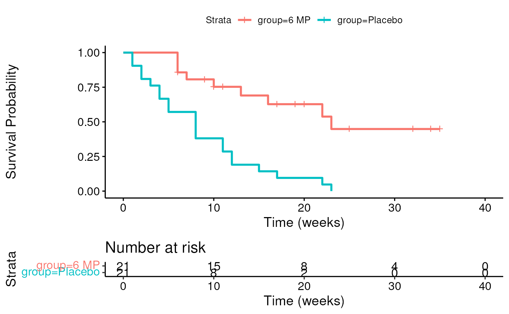
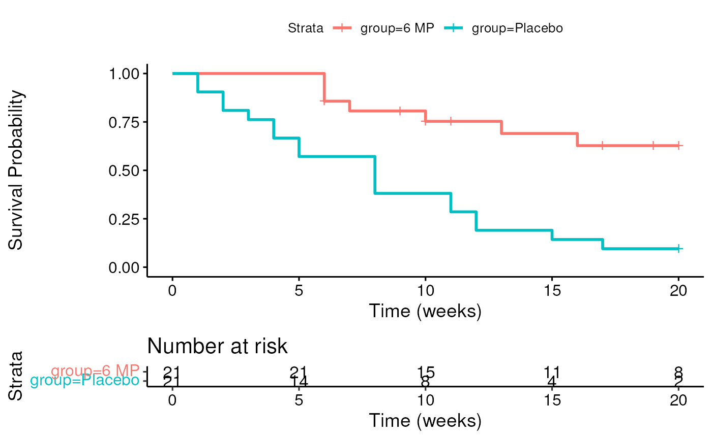

vignettes/session_lab.Rmd
session_lab.RmdLearning objectives
Exercises
##
## ── Column specification ────────────────────────────────────────────────────────
## cols(
## time = col_double(),
## cens = col_double(),
## group = col_character()
## )library(survminer) is recommendable.## Loading required package: ggplot2## Loading required package: ggpubr## [1] 6 6 6 7 10 13 16 22 23 6+ 9+ 10+ 11+ 17+ 19+ 20+ 25+ 32+ 32+
## [20] 34+ 35+ 1 1 2 2 3 4 4 5 5 8 8 8 8 11 11 12 12
## [39] 15 17 22 23fit <- survminer::surv_fit(Surv(time, cens) ~ group, data = leuk) survminer::ggsurvplot(fit, xlab = "Time (weeks)", ylab = "Survival Probability", risk.table = TRUE)
## Warning: Vectorized input to `element_text()` is not officially supported.
## Results may be unexpected or may change in future versions of ggplot2.
quantile(fit)
## $quantile
## 25 50 75
## group=6 MP 13 23 NA
## group=Placebo 4 8 12
##
## $lower
## 25 50 75
## group=6 MP 6 16 23
## group=Placebo 2 4 8
##
## $upper
## 25 50 75
## group=6 MP NA NA NA
## group=Placebo 8 12 NA## Call:
## survdiff(formula = Surv(time, cens) ~ group, data = leuk)
##
## N Observed Expected (O-E)^2/E (O-E)^2/V
## group=6 MP 21 9 19.3 5.46 16.8
## group=Placebo 21 21 10.7 9.77 16.8
##
## Chisq= 16.8 on 1 degrees of freedom, p= 4e-05## ── Attaching packages ─────────────────────────────────────── tidyverse 1.3.0 ──## ✔ tibble 3.0.4 ✔ dplyr 1.0.2
## ✔ tidyr 1.1.2 ✔ stringr 1.4.0
## ✔ purrr 0.3.4 ✔ forcats 0.5.0## ── Conflicts ────────────────────────────────────────── tidyverse_conflicts() ──
## ✖ dplyr::filter() masks stats::filter()
## ✖ dplyr::lag() masks stats::lag()leuknew <- leuk %>% mutate(newtime = pmin(time, 20)) %>% mutate(newcens = ifelse(time <= 20, cens, 0))
Kaplan-Meier plot
fit <- survminer::surv_fit(Surv(newtime, newcens) ~ group, data = leuknew) survminer::ggsurvplot(fit, xlab = "Time (weeks)", ylab = "Survival Probability", risk.table = TRUE)
## Warning: Vectorized input to `element_text()` is not officially supported.
## Results may be unexpected or may change in future versions of ggplot2.
Logrank test
## Call:
## survdiff(formula = Surv(newtime, newcens) ~ group, data = leuknew)
##
## N Observed Expected (O-E)^2/E (O-E)^2/V
## group=6 MP 21 7 16 5.05 14
## group=Placebo 21 19 10 8.05 14
##
## Chisq= 14 on 1 degrees of freedom, p= 2e-04If sicker patients were moved to another hospital where they weren’t followed up on, and were also more likely to relapse, this would be informative censoring.